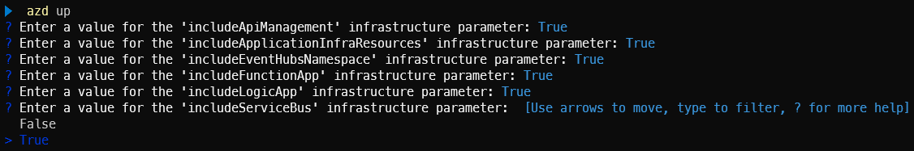
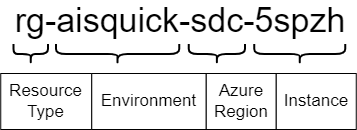
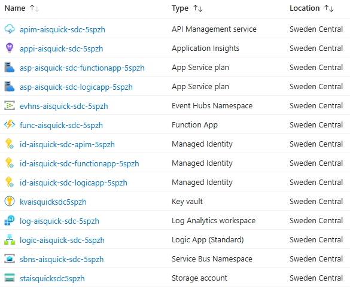

Tips and Tricks for Authoring Azure Developer CLI (azd) Templates

I’ve been working with the Azure Developer CLI (azd) for the past year, creating several templates to simplify the deployment of Azure solutions. What started as a simple Bicep template for deploying Azure Integration Services has evolved into multiple published azd templates that anyone can use with just a few commands.
In this post, I’ll share the tips and tricks I’ve learned while authoring and publishing these templates.
Table of Contents
- What is the Azure Developer CLI?
- Use Existing Templates
- Create Your Own Template
- Publish Your Template
- Create a Comprehensive README
- Working with Parameters
- Apply a Naming Convention
- Use Hooks for Customization
- Add a Pipeline
- Environment Variables and Local Development
- Keep Dependencies Up to Date
- Version Your Template
- Handle Entra ID Resources
- Conclusion
What is the Azure Developer CLI?
The Azure Developer CLI is an open-source tool that accelerates your path from a local development environment to Azure. It provides developer-friendly commands that map to key stages in your workflow, including code, build, deploy and monitor.
It’s different from the Azure CLI. While the Azure CLI (az) is used to manage Azure resources and focuses on infrastructure, the Azure Developer CLI (azd) can be used to deploy complete applications, including both infrastructure and application code.
I discovered azd while working on a Bicep template for deploying Azure Integration Services. A colleague pointed me to azd because it makes deployment of Bicep and Terraform templates super easy. With just three simple commands, you can download a template, authenticate to Azure and deploy your infrastructure and application:
azd init --template ronaldbosma/azure-integration-services-quickstart
azd auth login
azd up
I tried it out, loved it and never looked back.
Use Existing Templates
Before creating your own template, check Awesome azd. It has a great collection of ready-to-use templates and there might be one that fits your needs.
Create Your Own Template
If you have an interesting repository with Bicep or Terraform infrastructure scripts and optionally application code that might be useful to others, consider turning it into an azd template. This makes it super easy for other people to use and deploy.
The guide on Create Azure Developer CLI templates overview provides a great overview for getting started with your own azd templates.
Publish Your Template
Once you’ve created your template, you can publish it on Awesome azd so other users can find it. The contribution guide explains the process.
If your template can be used in Microsoft training courses (like AZ-104 or AZ-204), check if you can also publish it on Trainer Demo Deploy. This site contains a subset of templates specifically created for trainers. The contribution guide provides details on how to submit your template.
Create a Comprehensive README
To make it easy for people to use your template, create a README that explains what your template deploys and how to get started. Include any additional tools users need to install aside from azd and what permissions they need in Azure to deploy it. I always include the three steps to initialize the template, authenticate to Azure and deploy. For example:
azd init --template ronaldbosma/track-availability-in-app-insights
azd auth login
azd up
Also include a short explanation how users can test the application once it’s deployed. If you want to publish on Trainer Demo Deploy, create a more extensive demo guide that trainers can use.
If there are any known deployment issues, include a troubleshooting section that explains how to fix or work around them. For example, many of my templates deploy API Management. If you don’t purge the instance during cleanup, you’ll run into errors when trying to deploy the template again. Adding this to your README can save users a lot of time and frustration.
When your template has hooks, add a section to the README explaining what they do. And if your template includes a GitHub Actions workflow or Azure DevOps pipeline, describe what it does and how to configure it. Include the authentication mechanism your pipeline expects and any additional permissions needed for the pipeline’s service principal.
You can find an example of a README in my Track Availability in Application Insights template.
Working with Parameters
Default Values
In my Track Availability in Application Insights template, I have several settings that have sensible defaults but that users should be able to override. These defaults can be specified in the main.parameters.json file of your template. Here’s an example:
{
"$schema": "https://schema.management.azure.com/schemas/2019-04-01/deploymentParameters.json#",
"contentVersion": "1.0.0.0",
"parameters": {
"environmentName": {
"value": "${AZURE_ENV_NAME}"
},
"location": {
"value": "${AZURE_LOCATION}"
},
"approximateFailurePercentage": {
"value": "${APPROXIMATE_FAILURE_PERCENTAGE=10}"
},
"sslCertRemainingLifetimeDays": {
"value": "${SSL_CERT_REMAINING_LIFETIME_DAYS=30}"
},
"alertRecipientEmailAddress": {
"value": "${ALERT_RECIPIENT_EMAIL_ADDRESS}"
}
}
}
The Bicep parameter approximateFailurePercentage is set to 10 by default. Once the template is deployed, the value is loaded from the APPROXIMATE_FAILURE_PERCENTAGE environment variable when deploying. Users can override it in several ways, for example by using the azd env set command:
azd env set APPROXIMATE_FAILURE_PERCENTAGE 50
If you have these kinds of parameters, add a section to your project’s README that describes the different configuration settings and how to change them.
Optional Resources
My Azure Integration Services Quickstart template has resources that I sometimes want to deploy and other times not. To make this possible, I added boolean parameters in the main.parameters.json for each optional resource. For Service Bus, for example:
"includeServiceBus": {
"value": "${INCLUDE_SERVICE_BUS}"
}
Then, in my main.bicep, I defined a boolean parameter called includeServiceBus and output the value to the environment variable INCLUDE_SERVICE_BUS:
@description('Include the Service Bus in the deployment.')
param includeServiceBus bool
// ...Logic to optionally deploy Service Bus...
output INCLUDE_SERVICE_BUS bool = includeServiceBus
When you deploy this template for the first time, it will ask you to specify a value for each parameter that doesn’t have a default. See the screenshot below for an example:

After provisioning succeeds, the values are stored in their corresponding environment variables. This means if you make a change to the template and redeploy it, it won’t ask the user to specify a value again.
Apply a Naming Convention
Before I started using azd, I had created several Bicep templates. One thing that annoyed me was having to specify the names of different resources before deploying a template. They were stored in a script, but if I wanted to deploy multiple instances of a template, I had to change all these names.
So, I created a set of Bicep user-defined functions that apply the naming convention described in the Cloud Adoption Framework. Using the naming convention, I only have to specify a workload and environment, and the rest is taken care of.
See Apply Azure naming convention using Bicep functions if you’re interested in how it works.
When you initialize and deploy an azd template, the minimum you need to specify is the environment name, Azure subscription and region. With that in mind, I made an azd-specific version of this naming convention where the workload and environment are merged into one. See the diagram below for an example of how this looks:

With this approach, you only have to specify the already required location and environmentName parameters in your Bicep script. The instance can be generated with the generateInstanceId function, which returns a unique string based on a combination of the Azure subscription ID, environment name and location. The getResourceName function can then be used to create names for different resources:
@description('Location to use for all resources')
param location string
@description('The name of the environment to deploy to')
param environmentName string
// Generate an instance ID to ensure unique resource names
var instanceId string = generateInstanceId(environmentName, location)
var resourceGroupName string = getResourceName('resourceGroup', environmentName, location, instanceId)
var apiManagementServiceName string = getResourceName('apiManagement', environmentName, location, instanceId)
var appInsightsName string = getResourceName('applicationInsights', environmentName, location, instanceId)
The resulting resource names are unique and follow a consistent naming convention, which makes it easier to identify and manage resources in the Azure portal. See the screenshot below for an example of deployed resources with this naming convention:

See Naming Convention for Azure Developer CLI (azd) templates for more details.
If you use this naming convention, you can deploy the template multiple times in the same subscription with the same environment name as long as the region differs. However,
azd downlooks at theazd-env-nametag to determine what to remove and this doesn’t contain the region. This means if you execute theazd downcommand, all instances of the deployed template that share the same environment name will be removed.
Use Hooks for Customization
Hooks are a great way to customize your workflow. I’ve used them in several scenarios. For example, to create certificates in Key Vault and assign them to app registrations, or to build .NET projects for Logic Apps with custom code. I mostly use PowerShell hooks because I’m more experienced with it, but you can also use bash.
Environment Variables in Hooks
When executing a hook, you’ll most likely need to pass environment variables to the script, such as the Azure subscription ID and resource group. You can use azd env get-value, but the easiest approach that works for me is to just use the native PowerShell way to access environment variables with $env:VARIABLE_NAME. Locally, this retrieves values from the .azure/<environment>/.env file when the hook is executed by azd, but it also works in a pipeline where you might pass them as environment variables to an action or task.
I started out using environment variables directly in my scripts, but now I always use parameters with the environment variables as defaults. This makes it easier to execute and test your script without having to run azd. For example, the following snippet defines two parameters for the Azure subscription ID and resource group, with their default values set to the corresponding environment variables:
param(
[Parameter(Mandatory = $false)]
[string]$SubscriptionId = $env:AZURE_SUBSCRIPTION_ID,
[Parameter(Mandatory = $false)]
[string]$ResourceGroup = $env:AZURE_RESOURCE_GROUP
)
Check Azure CLI Authentication in Hooks
By default, azd uses its own login through azd auth login. If you’re using the Azure CLI in a hook, make sure it’s set to the same subscription where you deployed your template with azd. This is easily done with the following snippet:
az account set --subscription $SubscriptionId
if ($LASTEXITCODE -ne 0) {
throw "Unable to set the Azure subscription. Please make sure that you're logged into the Azure CLI with the same credentials as the Azure Developer CLI."
}
Add a Pipeline
To make changes to my templates with more confidence, I include a GitHub Actions workflow in my template’s repository that automates the build, deployment, test and cleanup process. This also makes it easier to verify external contributions from other users or automated tools.
My workflows usually consist of the following jobs:
- Build, Verify and Package: Sets up the build environment, validates the Bicep template, executes unit tests and packages the project’s code and integration tests
- Deploy to Azure: Provisions the Azure infrastructure and deploys the packaged applications to the created resources
- Verify Deployment: Runs automated integration tests to verify the deployed resources and application. It can also verify monitoring and logging, for example by checking that availability tests succeed.
- Clean Up Resources: Removes all deployed Azure resources
I’ll share more details about this setup in my next blog post.
Environment Variables and Local Development
If you’ve deployed a template from your local machine and want to execute some code locally before deploying it to Azure, or if you have integration tests that verify your application and want to execute them locally, you probably need some of the environment variable values stored in .azure/<environment>/.env.
I’ve created a bit of code that locates the azd .env file and loads the variables into the Environment class using the dotenv.net library. You can then use the ConfigurationBuilder to load the configuration as you normally would.
A sample of the code is located in AzdDotEnv.cs and can be used as follows:
// Loads Azure Developer CLI environment variables
// It's optional since .env file might be missing in CI/CD pipelines
AzdDotEnv.Load(optional: true);
var configuration = new ConfigurationBuilder()
.AddEnvironmentVariables()
.Build();
This approach works locally, but also when your code runs in Azure or a pipeline where you have actual environment variables instead of a .env file.
Keep Dependencies Up to Date
A practice you should apply to all your projects is keeping dependencies up to date. With a good pipeline in place, this can be automated using a tool like Mend Renovate or Dependabot. I’m using Renovate because it’s able to update the versions of Bicep resources, which isn’t currently supported by Dependabot.
Renovate runs once a month and creates a pull request with updates of all dependencies that have a newer version. This automatically triggers my GitHub Actions workflow to verify the changes. I only have to merge the PR once the workflow successfully completes.
Having a good pipeline in place is key for this. While creating this blog post, I ran Renovate, which updated several dependencies. In several templates, the pipeline failed because a new major version of
Microsoft.ApplicationInsights.WorkerServiceturned out to be incompatible with the Azure Functions worker, causing issues with my Azure Functions.
Version Your Template
You can keep track of your template’s version in the metadata of the azure.yaml file. In addition, I’m using the Releases feature in GitHub to keep track of my template versions. This provides a nice overview of all the changes.
By adding a tag for a release, it’s also possible for users to retrieve a specific version of your template using the --branch or -b parameter of azd init. Although the name of the parameter might suggest otherwise, it works for both branches and tags. The following example retrieves version v1.14.0 of my azure-integration-services-quickstart template:
azd init --template ronaldbosma/azure-integration-services-quickstart --branch "v1.14.0"
To introduce a new version (e.g. 1.14.0), I follow these steps:
-
Update the version in
azure.yamland commit the change:name: azure-integration-services-quickstart metadata: template: azure-integration-services-quickstart@1.14.0 -
Add a
v1.14.0tag to the last commit:git tag "v1.14.0" git push origin "v1.14.0" -
Publish a new
v1.14.0release in GitHub.You can do this manually, but if you use gh release create, you can automatically generate release notes based on the merged pull requests since the last release:
gh release create "v1.14.0" ` --generate-notes ` --target main ` --latest
Handle Entra ID Resources
At the moment, azd doesn’t support removing Entra ID resources, as reported in this issue. If you have a template that deploys Entra ID resources, you need to create a hook to remove them.
I have several templates that deploy one or more app registrations with service principals. I started out with a simple hook that took the IDs of the app registrations that were created and removed them. But when adding or removing app registrations, I also had to update the hook, which I sometimes forgot.
So, I took a different approach. Similar to the azd-env-name and azd-service-name tags that you need to add to services when deploying application code, I introduced a tag called azd-env-id that has a unique identifier for the deployed environment. This tag is added to all resources, including the app registrations:
var azdEnvironmentId string = getResourceName('azdEnvironment', environmentName, location, instanceId)
var tags = {
'azd-env-name': environmentName
'azd-env-id': azdEnvironmentId
}
// ...Use tags when creating resources, like an app registration...
I’m generating a unique environment ID using my naming convention function. I’m not using the environment name because you could deploy the same template with the same environment name in different Azure subscriptions within the same tenant. If I used the environment name, they would all have the same tag and I wouldn’t be able to distinguish between them. So, to make sure we only remove Entra ID resources for a specific environment, a unique environment ID is used.
Most Azure resources use key-value pairs for tags, whereas Entra ID resources have a string array for their tags. I’m using this Bicep helper function to flatten the tag dictionary to an array:
@export()
func flattenTags(tags object) string[] => map(items(tags), tag => '${tag.key}: ${tag.value}')
Then, when cleaning up, in my predown hook, I search for all app registrations that have this tag and remove them accordingly.
When removing an app registration and service principal from Entra ID, they’re first soft deleted (moved to deleted items). This can be annoying if you want to redeploy the same environment later, as you can’t create a new app registration with the same name as a soft-deleted one. It’s a good idea to permanently remove these resources from the deleted items as well.
I updated my script to do this and it worked great when run locally, but once I introduced pipelines, I noticed that removal sometimes failed. The success rate was very flaky.
I’ve had a similar issue with generating secrets on an app registration and I think the flakiness is caused by eventual consistency. My Azure tenant is in West Europe, while my GitHub Actions workflow runs in North Central US and seems to interact with Entra ID in North Central US as well. See this issue for more details if you’re interested.
I’m now using a script that takes eventual consistency into account by adding retries. You can find a working version in predown-remove-app-registrations.ps1.
Conclusion
Creating azd templates has made it significantly easier for me to share and deploy Azure solutions. With just three commands, anyone can initialize, authenticate and deploy a complete application with its infrastructure.
The tips I’ve shared in this post cover the lessons I’ve learned from creating multiple azd templates. From basic parameter management to more advanced topics like handling Entra ID resources and eventual consistency, these practices have helped me create more robust and user-friendly templates.
If you have Bicep or Terraform templates lying around, I encourage you to turn them into azd templates. The initial setup effort is minimal and it makes your work much more accessible to others. Plus, contributing to Awesome azd is a great way to give back to the community.
In my next blog post, I’ll dive deeper into the GitHub Actions workflow setup I use to automatically test my templates.